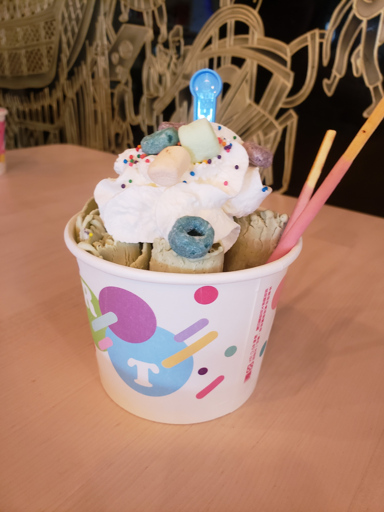
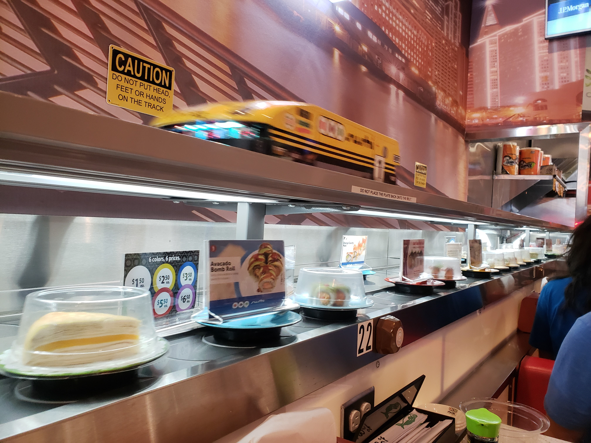

Hi (-: I don't really have much in the way of hobbies, but I do spend a lot of time exploring new coffee shops downtown. I have a huge list that I add to every time I find a new place that looks interesting. I probably go visit a new coffee shop almost every weekend.
I also occasionally visit a new food place that I find interesting. For example, here's a picture from a thai rolled ice cream place in Chinatown that I've visited.....
I also went to a rotary sushi bar up north over this last weekend -->
Cafe-Umbria is a little further up north and has really interesting mugs with bright designs, and pretty good coffee (although the seating area is not the best). If you're looking for more of a food place, Shokolad is located in Ukrainian village and is a good Russian food spot. And if you're interested in something a little closer, Red Line Cafe is always a decent spot is about a 12 minute walk from IIT